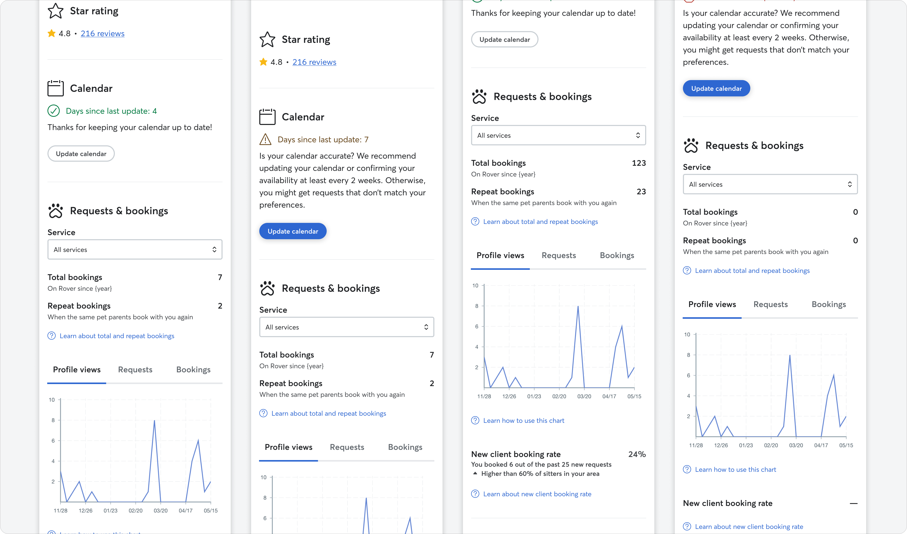
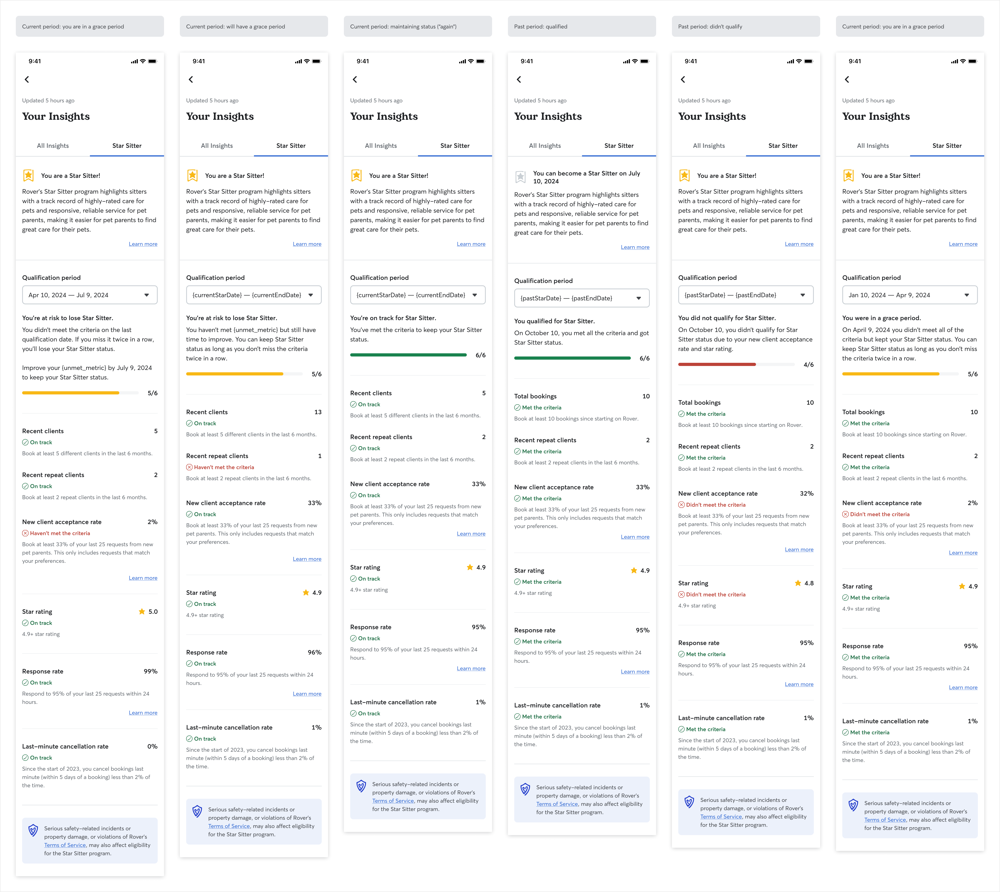
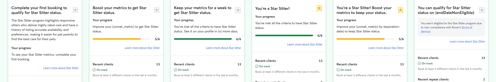

Rover · 2023–2025 · Loyalty & Incentives
Star Sitter
Program
4.8% revenue per customer · ~$2.5M incremental ARR

Despite existing work around successful sitters, three gaps remained: owners couldn't identify the most reliable sitters in search; sitters saw metrics but lacked motivation to change behaviour; and off-platform diversion was a strategic revenue leak.
Star Sitter was built as a third lever: a status program that gamifies supply-side behaviours, directs demand to reliable sitters, and ties status to on-platform repeat bookings.
"As lead product designer, I co-led the design from first concept through global rollout — the end-to-end status model, owner and sitter surfaces, and the explainability layer in Sitter Insights."
Bernardo Prudêncio3 annotated screens: Star Sitter badge on search result cards; the "Only show Star Sitters" owner filter toggle; and the qualification criteria panel on a sitter profile page.
We launched Sitter Insights first — establishing the mental model before introducing status. A small but positive improvement in conversation booking rate (+0.6%) confirmed sitters responded to visibility.
The beta in limited markets introduced provider-level, non-tiered status. Badge surfacing on search cards and profiles, plus an owner filter, shifted behaviour meaningfully — but CX sentiment surfaced early cracks around edge cases.

Affinity map from 6 moderated sitter sessions — 3 insight clusters: qualification confusion (what counts toward the badge?), fairness concerns (low-activity vs. long-tenure), and competitive motivation (desire to achieve the badge).

Usability tests showed sitters skimmed past key rules. We tightened copy, pulled core rules into scannable bullets, and added a clear "Check your progress" CTA into Sitter Insights.
Three major fairness changes: moved to recent activity windows; formalised a grace period for sitters who narrowly miss one metric; and fixed a Contact More Sitters bias penalising booking rates unfairly.
Quarterly refreshes created predictable CX spikes and a fragile batch process. Moving to a rolling model — sitters earn Star Sitter as soon as they meet criteria, with a three-month grace period — simplified the UX dramatically.

increase in revenue per new-to-Rover customer · ~$2.5M incremental annual revenue
Before/after comparison of the Sitter Insights tracking tab — quarterly model with qualification period dropdowns versus the rolling model's single real-time status view, showing the UX simplification from Phase 5.